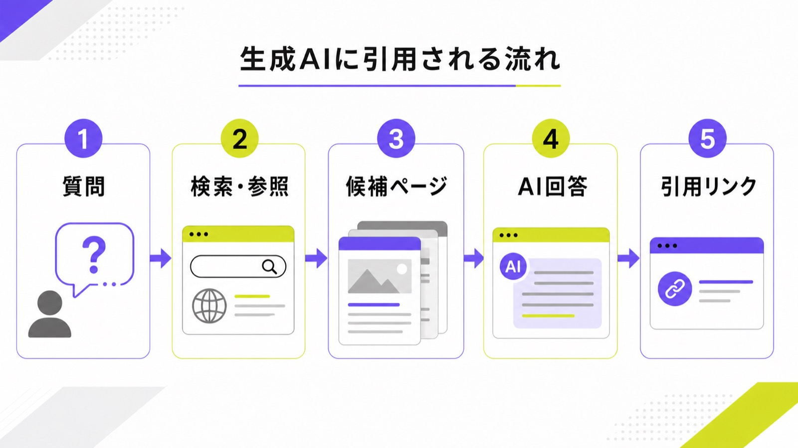
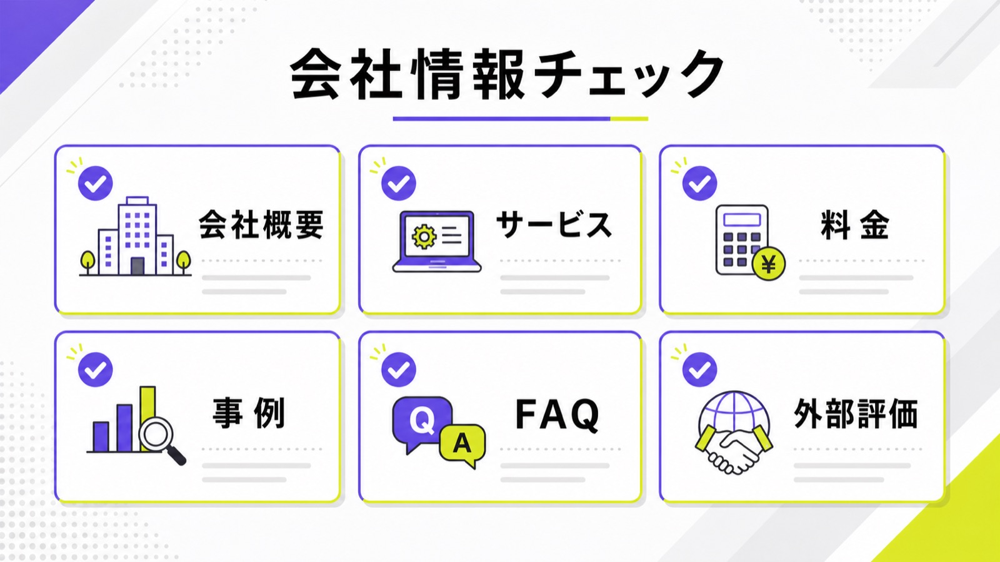
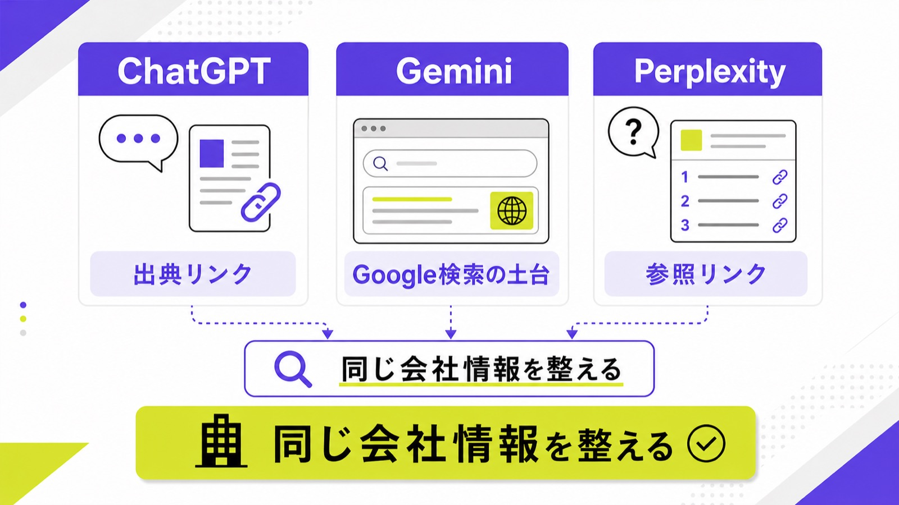

生成AIに引用されるには？AIが参照しやすい記事・会社情報の作り方

生成AIに引用されるには、特別な裏技を探すより、AIが安心して参照できる記事と会社情報をそろえることが大切です。ここでいう生成AIは、ChatGPT、Gemini、Perplexity、Google AI Overviewsのように、質問に対して答えを作るサービスを指します。
ただし、AIに出ること、社名が出ること、記事URLが引用されることは同じではありません。まずは「どのAIで、どんな質問で、どのURLを出したいのか」を決める必要があります。
この記事では、シート候補の「生成AI 引用されるには」という検索意図に合わせて、AIが参照しやすい記事構成、会社情報の整え方、AIごとの見方、毎月の確認方法をやさしく説明します。ChatGPTだけを深く見たい方は、先にChatGPTに引用される方法の記事も参考にしてください。
目次

生成AIに引用されるとはどういう状態か
最初に、目標を分けて考えます。AI回答に社名が出るだけでよいのか、自社ページのURLまで出したいのか、比較候補として推薦されたいのかで、必要な準備が変わります。
社名表示・URL引用・推薦は別々に見る
生成AIの回答に社名が出ても、根拠リンクが競合サイトや比較メディアに向いていることがあります。これでは読者が詳しく確認するときに、自社サイトへ来てくれません。だから確認するときは、社名が出たかだけでなく、回答内や出典欄にURL引用まで見ることが大切です。
たとえば「中小企業におすすめのLLMO会社は？」と聞いたとき、社名が出る、料金が正しく説明される、AIMAのサービスページや記事が根拠として出る、という3段階があります。どこまでできているかを分けると、次に直すページが決めやすくなります。
AIごとに引用の出方は違う
ChatGPT、Gemini、Perplexity、Google AI Overviewsは、同じ質問でも答え方やリンクの出し方が違います。ChatGPTでは検索付き回答の出典、GeminiではGoogle検索で読めるページ、Perplexityでは参照リンクが見やすいです。まずAIごとの出方を分けて見てください。
1つのAIで出たから完了、とは考えないほうが安全です。見込み客が使うAIは人によって違います。BtoBではChatGPTやPerplexity、一般検索ではGoogle AI OverviewsやGeminiを見られることがあります。狙うAIを広げすぎず、まず2〜3種類で確認しましょう。
保証ではなく引用候補に入る土台を作る
生成AIに必ず引用される方法はありません。AI側の仕組み、検索結果、質問文、ユーザーの場所、最新情報によって答えは変わります。現実的にできるのは、AIがページを見つけやすく、読者の質問に答えやすくすることです。最初から保証はない前提で進めます。
そのうえで、やることは難しくありません。ページを読める状態にし、結論を先に書き、会社情報をそろえ、料金や事例を具体的にし、外部からも言及される材料を出します。地味ですが、この土台がないと、どのAIにも引用されにくくなります。

AIが参照しやすい記事の作り方
記事で一番大事なのは、検索した人の質問にまっすぐ答えることです。AI向けに特別な文章を書くより、人が読んでもすぐ分かる記事にするほうが結果的にAIにも伝わりやすくなります。
冒頭で質問に短く答える
記事の冒頭で長い前置きを続けると、読者もAIも何の答えか分かりにくくなります。「生成AIに引用されるには、質問に合う本文、読める会社情報、一次情報、外部評価をそろえることが必要です」のように、最初に結論を出します。まず最初に答える形にしてください。
その後で、なぜ必要なのか、具体的に何を直すのか、どの順番で進めるのかを説明します。冒頭の答えがはっきりしていると、本文全体の役割も決まり、見出しやFAQも作りやすくなります。記事を増やす前に、冒頭100〜200文字を見直しましょう。
見出しごとに1つの質問へ答える
H2やH3には、読者が聞きそうな質問を置きます。「構造化データは必要ですか？」「料金は出すべきですか？」「ChatGPTだけ見ればよいですか？」のように分けると、AIも段落の意味を取りやすくなります。基本は1見出し1回答です。
1つの見出しの中で、料金、事例、FAQ、技術設定を全部話すと、どの質問への答えかぼやけます。見出しごとに役割を決め、最初の1文で答え、そのあとに理由と例を足します。表や箇条書きは、比べる内容が多いときだけ使うと読みやすくなります。
体験・数字・事例を足す
どのサイトにも書ける一般論だけでは、引用される理由が弱くなります。自社の料金、支援範囲、相談でよく聞かれる質問、改善前後の例、実際の事例、独自調査などを足してください。AIにも読者にも強いのは自社だけの情報です。
Googleも、生成AI検索では独自で役に立つコンテンツが大切だと説明しています。つまり、他社記事の言い換えを増やすより、自分たちが知っていること、実際に支援して分かったこと、顧客が判断に使う情報を出すほうが長く効きます。
“Creating content that people find unique, compelling, and useful”
出典：Google Search Central「Google's Guide to Optimizing for Generative AI Features on Google Search」
会社情報で必ずそろえる項目
生成AIに引用されたい企業ほど、記事だけでなく会社情報の整備が必要です。AIは記事だけを見て判断するのではなく、会社概要、サービス、料金、事例、FAQ、外部の言及も材料にします。
会社概要とサービス内容を同じ言葉でそろえる
会社概要では「Webマーケティング支援」と書き、サービスページでは「LLMO支援」と書き、ブログでは「AI検索対策」と書いていると、何の会社か分かりにくくなります。言い換えは悪くありませんが、中心になる説明は同じ言葉でそろえる必要があります。
AIMAなら、LLMO・AI検索対策に特化していること、月額5万円で相談できること、記事作成や修正まで支援することを、会社概要、サービスページ、関連記事、FAQで同じ文脈にします。AIが見ても人が見ても、何を頼める会社かすぐ分かる状態が理想です。
料金・対応範囲・契約条件を出す
AIに比較候補として扱われたいなら、料金や支援範囲を隠しすぎないほうがよいです。見込み客は「いくらか」「何をしてくれるか」「最低契約期間はあるか」を知りたいからです。記事やサービスページには比較できる材料を置きましょう。
AIMAの場合は、月額5万円、相談回数の上限なし、記事作成・修正込み、最低契約期間なしが強みです。こうした情報が本文で読めると、AIにも読者にも判断材料として伝わります。料金表を画像だけにする、PDFだけにする、営業資料だけに置くのは避けてください。
FAQと事例を先回りして置く
生成AIでは、読者がそのまま会話文で質問します。「中小企業でもできますか？」「SEO会社に頼んでいても追加できますか？」「どのくらいで効果を見ますか？」のような質問に、FAQで先に答えておくと使われやすくなります。大切なのは先回りした答えです。
事例も同じです。業種、課題、直したページ、追加したFAQ、確認したAI、問い合わせの変化を簡単にまとめます。実名公開が難しい場合でも、「BtoB製造業」「地域クリニック」のように範囲をぼかして説明できます。AIに説明されても困らない情報を用意しましょう。

ChatGPT・Gemini・Perplexityで見る違い
生成AIに引用されるには、AIごとの違いも知っておくと便利です。ただし、最初から細かい仕組みを覚える必要はありません。見る場所と直す場所を分ければ十分です。
ChatGPTは検索付き回答とOAI-SearchBotを見る
ChatGPTでは、検索を使った回答に出典リンクが出る場合があります。自社ページがここに出るかを見るには、同じ質問で検索付き回答を確認し、自社URL、競合URL、回答の言われ方を記録します。技術面ではOAI-SearchBotをrobots.txtやWAFで止めていないかも確認します。
OpenAIは、ChatGPT Searchでインライン引用が出る場合があること、サイトを含めるにはOAI-SearchBotを許可することが重要だと説明しています。つまり、ページの中身だけでなく、AI側の検索に読まれる入口も点検が必要です。
“ChatGPT responses that use search may include inline citations.”
GeminiとGoogleは検索で読めるページが土台
GeminiやGoogle AI Overviewsを考えるときは、まずGoogle検索で読めるページになっているかを見ます。noindex、robots.txt、canonicalのミス、画像だけの重要情報、薄い本文があると、AI以前に検索で扱いにくくなります。基本はGoogle検索の土台です。
Googleは、生成AI検索でも公開され、クロールできるコンテンツが重要だと説明しています。だから、AI専用の文章を作るより、読者に役立つページを検索エンジンが読める形で公開することが先です。詳しくはAI検索に強い企業サイト設計の記事も参考になります。
Perplexityは参照リンクとクローラーを見る
Perplexityは回答内の参照リンクが見やすいため、引用確認に向いています。質問ごとに、自社ページが参照リンクに入っているか、競合のどのページが使われているかを見ます。技術面ではPerplexityBotを止めていないかも確認します。
Perplexityの公式ドキュメントでは、PerplexityBotが検索結果でWebサイトを表示・リンクするためのクローラーとして説明されています。WAFを使っているサイトでは、正しいボットまでブロックしていないかも見ると安全です。
“PerplexityBot is designed to surface and link websites in search results on Perplexity.”

引用されやすさを毎月確認する方法
生成AIの回答は変わります。記事を公開して終わりではなく、毎月同じ質問で見て、出方がどう変わったかを残すと、次に直すページを決めやすくなります。
質問リストを10個に絞る
最初からたくさん調べると続きません。まずは問い合わせに近い質問を10個ほど選びます。「LLMO対策会社 おすすめ」「生成AIに引用されるには」「中小企業 AI検索対策 費用」のように、商談に近いものを優先します。最初は10個から始めるのが現実的です。
質問は、サービス名、費用、比較、地域、業種、課題を組み合わせます。毎月同じ質問でChatGPT、Gemini、Perplexityを見れば、自社名が出始めたか、競合が増えたか、引用URLが変わったかを比べやすくなります。
自社名・URL・競合名を同じ表に残す
記録する項目はシンプルで構いません。確認日、質問、AI名、自社名の有無、自社URLの有無、引用されたURL、競合名、回答の気になる点、次に直すページを残します。毎回バラバラに見るのではなく同じ表で見ることが大切です。
この表があると、「社名は出るがURLがない」「競合の比較記事ばかり出る」「料金ページを直したあとに説明が正しくなった」など、原因が見えます。感覚ではなく、同じ見方で記録すると、改善の優先順位が決めやすくなります。
PVだけでなく相談内容を見る
AI検索では、クリック数だけでは成果が見えにくいことがあります。AI回答で比較候補に入り、ユーザーが会社名で再検索したり、直接問い合わせたりする場合もあるためです。PVよりも相談につながる変化を見ましょう。
具体的には、指名検索、問い合わせフォームの文面、商談で聞かれる質問、CTAクリック、AI検索らしい参照元、既存記事の読了を確認します。AIMAの支援では、記事作成だけでなく、毎月の確認から次に直すページまで決める運用を重視します。
AIMAで支援できること
生成AIに引用されたい企業では、記事を増やす前に、どの質問で出たいのか、今どこが弱いのかを分ける必要があります。AIMAでは、LLMO特化でこの整理から支援します。
出ない理由を診断する
まず、ChatGPT、Gemini、Perplexity、Google AI Overviewsで自社がどう見えているかを確認します。社名が出ないのか、URLが引用されないのか、競合だけが出るのか、古い情報で説明されるのかで対策は違います。最初に原因を分けることが必要です。
AIMAの無料LLMO診断では、今のサイトがAI検索にどのくらい伝わりやすいかを確認できます。いきなり高額なツールやリニューアルに進む前に、直すべきページと優先順位を見つけるほうが安全です。
記事作成と既存記事修正を同時に進める
生成AI引用対策では、新規記事だけを増やしても不十分です。サービスページ、料金、会社概要、事例、FAQ、既存ブログに不足があれば、そこも直します。AIMAでは支援範囲内で作成と修正を両方進めます。
たとえば、この記事のような新規記事を作るだけでなく、LLMO対策の基礎記事、サービスページ、無料診断ページ、関連記事を内部リンクでつなげます。サイト全体で何の専門会社か伝わると、AIにも人にも理解されやすくなります。
月5万円で続けやすくする
AIMAは、LLMO・AI検索対策に特化し、月額5万円で支援します。相談回数の上限なし、記事作成・記事修正込み、最低契約期間なしなので、まず数ヶ月だけ試しながら改善の方向を見られます。大きな初期投資より月5万円から始めやすい形です。
高額な分析ツールや大規模リニューアルが必要か迷っている場合は、まず質問設計、既存ページ修正、FAQ追加、記事作成、内部リンク、月次確認から始めるのが現実的です。詳しくはAIMAのサービス内容をご確認ください。
生成AI引用に関するよくある質問
生成AIに引用される確実な方法はありますか？
確実な方法はないです。生成AIごとに参照方法は違い、質問文や検索結果によって回答も変わります。だから、保証をうたう施策ではなく、読めるページ、質問に合う本文、一次情報、外部評価、継続確認をそろえることから始めてください。
llms.txtや構造化データだけで十分ですか？
十分ではありません。llms.txtや構造化データは補助と考えるのが安全です。本文が薄い、料金が画像だけ、会社情報が古い、FAQがない状態では、裏側の設定だけを足しても引用される材料が足りません。まず見える本文を整えましょう。
既存記事と新規記事はどちらを先に直しますか？
多くの場合は既存ページを先に見るほうがよいです。サービス、料金、会社概要、事例、FAQが弱いまま新規記事を増やしても、AIが会社を理解する材料が不足します。既存ページの不足を埋め、それでも足りない質問に対して新規記事を作ります。
ChatGPTだけ見れば十分ですか？
十分ではありません。見込み客が使うAIは人によって違います。ChatGPT、Gemini、Perplexity、Google AI Overviewsでは引用や表示の出方が違うため、最初は2〜3種類で複数AIで確認してください。自社の客層に近いAIを優先すれば大丈夫です。
まとめ
生成AIに引用されるには、専用の裏技を探すより、質問に合う記事、読める会社情報、一次情報、外部評価、毎月の確認をそろえることが大切です。社名が出るだけでなく、自社URLが引用されているかまで見ましょう。
ChatGPT、Gemini、Perplexityでは見る場所が違いますが、土台は同じです。会社概要、サービス、料金、事例、FAQを本文で読める形にし、記事では冒頭で答え、見出しごとに1つの質問へ答えます。
AIMAは、LLMO特化、月額5万円、相談回数の上限なし、記事作成・修正込み、最低契約期間なしで、生成AIに引用されやすい情報設計を支援します。まずは無料LLMO診断またはお問い合わせからご相談ください。
参考文献
参考：OpenAI Help Center｜ChatGPT Search
参考：Google Search Central｜Google's Guide to Optimizing for Generative AI Features on Google Search
参考：Perplexity｜Perplexity Crawlers
競合確認：コンマルク AI検索最適化サービス、Faber Company GEO/AIO/LLMOコンサルティング、ジオコード SEO・AIO・LLMO支援